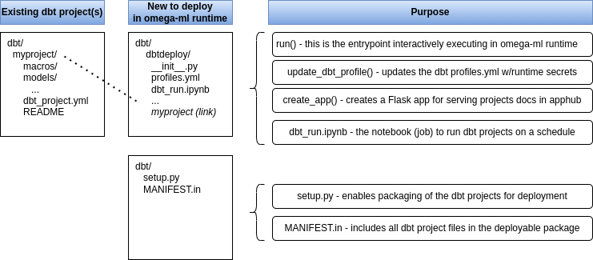

dbt projects can be deployed to run on the omega-ml runtime as an ad-hoc or a scheduled job as follows. dbt projects are essentially a collection of files that make up a SQL-based workflow. This means we can easily deploy dbt projects to omega-ml as a script, and run them on schedule or on-demand.
The steps to deploy dbt projects to omega-ml are as follows:
Here's a quick schematic overview of the components involved:
The following sections provide a step-by-step guide to deploy dbt projects to omega-ml, explaining each component. If you are just looking to deploy dbt projects without regard to all the gory details, follow the Quick Start section.
If you are looking to deploy dbt projects to omega-ml without going through all the details, here's a quick start guide:
Copy the dbtdeploy application to your dbt project's root directory:
$ cp -r /path/to/omegaml/examples/dbt/dbtdeploy /path/to/dbt
Update the profiles.yml file in the dbtdeploy directory with your connection details:
$ cp /path/to/dbt/myproject/profiles.yml /path/to/dbt/dbtdeploy/profiles.yml
Link your dbt project(s) into the dbtdeploy directory:
$ ln -s /path/to/dbt/myproject /path/to/dbt/dbtdeploy/myproject
Package the dbtdeploy application and deploy to omega-ml:
$ om scripts put /path/to/dbt/dbtdeploy dbt/dbtdeploy
Run the dbt project on-demand:
$ om runtime script dbtdeploy run project=myproject
Schedule the dbt project to run on a schedule:
# store the dbt_run notebook in om.jobs $ om jobs put /path/to/dbt/dbt_run.ipynb dbt_run # update the dbt_run notebook to run the dbt project(s) $ om shell jupyter
Serve the dbt project documentation via omegaml's apphub:
# package the app $ om scripts put /path/to/dbt/dbtdeploy apps/dbtdeploy $ om runtime restart app dbtdeploy Alternatively, serve the docs locally by running the following command: $ FLASK_APP=/path/to/dbt/dbtdeploy:create_app flask run
While we could package each dbt project separately, it is easier to use a single package, and include all dbt projects in one step. We'll call this the dbtdeploy script.
The dbtdeploy script is a small Python package that provides a utility function, update_dbt_profile, that updates the dbt profiles.yml file with omega-ml defaults. This is useful to ensure that the dbt project can connect to the SQL database, however without storing the connection details in the dbt project itself. We also include a run function in order to run the dbt project on demand using the omega-ml runtime. Later we will add a Flask application to serve the dbt project documentation, and also provide an example of how to run dbt projects on a schedule.
Here's how to create the "dbtdeploy" application:
Create the dbtdeploy application directory structure:
# in /path/to/dbt $ mkdir dbtdeploy $ touch dbtdeploy/__init__.py $ touch dbtdeploy/setup.py $ touch dbtdeploy/MANIFEST.in $ touch dbtdeploy/profiles.yml
Update the setup.py and MANIFEST.in files:
# dbtdeploy/setup.py
from setuptools import setup, find_packages
setup(
name='dbtdeploy',
version='0.1',
packages=find_packages(),
include_package_data=True,
install_requires=[
'dbt-core',
]
)
# dbtdeploy/MANIFEST.in
include *.in
recursive-include dbtdeploy *
Update the __init__.py file for the dbtdeploy application:
# /path/to/dbt/myproject/__init__.py
def update_dbt_profile(fn=None, mod=None, om=None, **vars):
"""
update dbt profiles.yaml with omegaml defaults
Usage:
import omegaml as om
mod = om.scripts.get('dbt/foo', install=True)
update_dbt_profile(mod=mod, om=om)
"""
from pathlib import Path
default_fn = Path(getattr(mod, '__file__', __file__)).parent / 'profiles.yml'
fn = Path(fn) if fn else default_fn
if not fn.exists():
raise FileNotFoundError(f'dbt profiles.yml not found at {fn}')
vars.update(**om.defaults) if om else None
with open(fn, 'r') as f:
profiles = f.read()
with open(fn, 'w') as f:
profiles = profiles.format(**vars)
f.write(profiles)
return fn.parent
def run(om=None, project=None, *args, **kwargs):
from pathlib import Path
import subprocess
dbt_dir = Path(__file__).parent
project_dir = dbt_dir / project
cmd = f"dbt run -d --profiles-dir {dbt_dir} --project-dir {project_dir}"
update_dbt_profile(f"{dbt_dir}/profiles.yml", om=om, **kwargs)
results = subprocess.run(cmd, shell=True, check=True, capture_output=True)
return results.stdout.decode('utf-8')
Now we're ready to package up all dbt projects, by linking each dbt project into the dbtdeploy script. This way we can keep the dbt project(s) as is, and update the dbtdeploy script with a single command.
Copy your profiles.yml from $HOME/.dbt/profiles.yml
$ cp /path/to/dbt/myproject/profiles.yml dbtdeploy/profiles.yml
Update the profiles.yml to remove any secrets and replace with them with {OMEGA_VARIABLE} placeholders.
The profiles.yml file should look something like this (adopt to the specific variables used in your omega-ml qualifier context):
myproject: target: prod outputs: prod: type: sqlserver driver: '{OMEGA_SQL_SERVER_DRIVER}' # (The ODBC Driver installed on your system) server: {OMEGA_SQL_SERVER_HOST} port: 1433 database: {OMEGA_SQL_SERVER_DB} schema: schema_name user: {OMEGA_SQL_SERVER_USER} password: {OMEGA_SQL_SERVER_PASSWORD}
Link each dbt project into the directory of the dbtdeploy application:
$ ln -s /path/to/dbt/myproject dbtdeploy/myproject
Every time we update the dbt project(s), we need to update the dbtdeploy application and deploy it to omega-ml.
Package the dbtdeploy application:
$ om scripts put . dbtdeploy dbt/dbtdeploy
We can now run the dbt project on-demand, running in the omega-ml runtime, using the following command:
$ om runtime script dbtdeploy run project=myproject
For testing and debugging, add --local to run the script locally:
$ om runtime --local script dbtdeploy run project=myproject
To run the dbt project as a scheduled job, we need to create a job (notebook) that runs one or all dbt projects. This notebook, we'll call it dbt_run, should look as follows and be stored in om.jobs.
The notebook essentially has three parts:
Here's how to create the job:
Create a job (notebook) to run the dbtdeploy application:
# in /path/to/dbt/dbt_run.ipynb
# store this in om.jobs (om jobs put dbt_run.ipynb dbt_run)
[1] # cron: 0 0 * * 1
# comment: run every Monday at midnight
[2] # (1) import dbt project and prepare dbt profile
dbtdeploy = om.scripts.get('dbt/dbtdeploy', install=True)
dbt_dir = Path(dbtdeploy.__file__).parent
dbtdeploy.update_dbt_profile(f"{dbt_dir}/profiles.yml", om=om)
[3] # (2) run dbt projects (repeat (2) and (3) for each dbt project)
project_dir = dbt_dir / 'foo`
!dbt run --profiles-dir $dbt_dir --project-dir $project_dir
[4] # (3) generate docs and save to om.datasets as dbt/<project>/report.zip
# generate docs
!dbt docs generate --profiles-dir $dbt_dir --project-dir $project_dir --target-path report
!python -m zipfile -c report.zip $project_dir/report
!om datasets put ./report.zip $project/report.zip
Save the notebook to om.jobs:
$ om jobs put dbtdeploy/dbt_run.ipynb dbt_run
Finally, we can serve the dbt project documentation via omegaml's apphub or locally. For this we need to create a Flask application that serves the dbt project:
Update the dbtdeploy/__init__.py file:
# add this to path/to/dbt/myproject/__init__.py
def create_app(server=None, uri=None, **kwargs):
import os
import uuid
from functools import lru_cache
from flask import Flask, abort
from flask import Blueprint
from zipfile import ZipFile
import omegaml as om
server = server or Flask(__name__)
server.config.setdefault('SECRET_KEY', os.environ.get('SECRET_KEY') or uuid.uuid4().hex)
app = Blueprint('foo', __name__,
url_prefix=uri,
template_folder='templates')
file_cache = lru_cache(maxsize=100)
om = om.setup()
@app.route('/')
def index():
# present a list of project reports stored in om.datasets
# -- each project report is stored as dbt/<project>/report.zip
href = "<a href='{uri}/{project}/index'>{project}</a><br>"
projects = [href.format(project=os.path.basename(os.path.dirname(project)),
uri=uri or '') for project in om.datasets.list('dbt/*')]
text = "<p>select a project to view its dbt report</p>"
return text + "\n".join(projects) if projects else "No projects found"
@app.route('/<project>/index')
def project(project):
# open the project report's index.html
_send_report_file.cache_clear()
project_dir = f'dbt/{project}'
return _send_report_file(project_dir, 'index.html')
@app.route('/<project>/<path:path>')
def static_file(project, path):
# open a static file from the project report
project_dir = f'dbt/{project}'
return _send_report_file(project_dir, path)
@app.errorhandler(404)
def handle_exception(e):
return {
"code": e.code,
"description": e.description,
"exception": str(e),
}, 404
@file_cache
def _send_report_file(project_dir, filename):
report_fn = f'{project_dir}/report.zip'
try:
with om.datasets.get(report_fn) as f:
zipfile = ZipFile(f)
data = zipfile.read(f'report/{filename}')
zipfile.close()
except Exception as e:
abort(404, str(e))
return data
server.register_blueprint(app)
return server
Serve the docs locally by running the following command:
$ FLASK_APP=dbtdeploy:create_app flask run
Serve the dbt project documentation via omegaml's apphub:
# package the app $ om scripts put . dbtdeploy apps/dbtdeploy $ om runtime restart app dbtdeploy